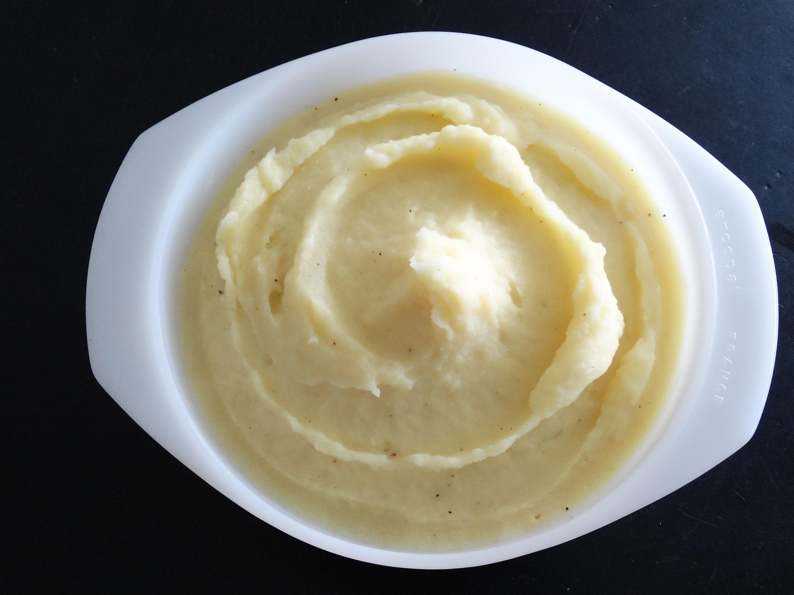

The BEST Mashed Potatoes

Fluffy, creamy and buttery mashed Potatoes Recipe
Mashed potatoes are the best part of any holiday meal and the perfect side with almost anything! They go especially well with sauces, gravy or things like Salisbury steak, beef tips, or Swiss steak.
Ingredients:
- 4 pounds potatoes russet or Yukon gold.
- 3 cloves garlic ❨optional❩.
- ⅓ cup melted salted butter.
- 1 cup milk or cream.
- salt to taste.
- black pepper to taste
Steps:
- Peel and quarter potatoes, place in a pot of cold salted water.
- Add cloves of garlic if ❨using❩ and bring to a boil, cook uncovered 15 minutes or until fork-tender. Drain well.
- Heat milk on the stove top ❨or in the microwave ❩ until warm.
- Add butter to the potatoes and begin mashing. Pour in heated milk a little at a time while using a potato masher to reach desired consistency.
- Season with salt and pepper. Serve hot.
Home